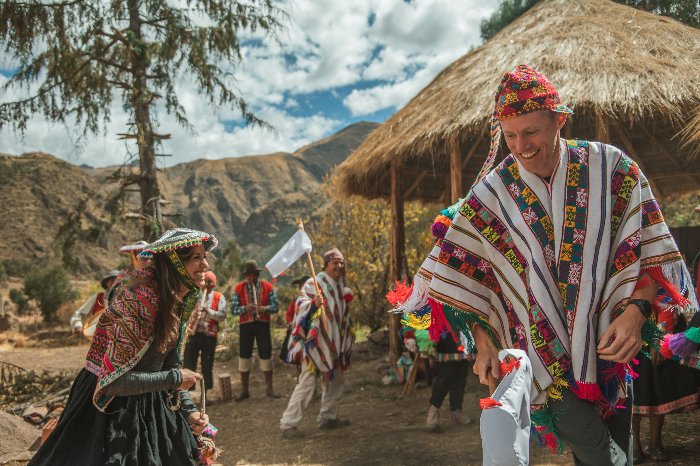

Peru

Kultur
Peru hat etwa 28 Millionen Einwohner, von denen über ein Drittel im Ballungsgroßraum der Hauptstadt Lima lebt. Die Bevölkerung teilt sich wie folgt auf: Rund 54 % der Einwohner sind Indígenas (Quetchua, Aymara), ca. 2 % Tieflandindianer (Tano, Tuoí u.a.), 31 % Mestizen und 11 % Weiße. Die Minderheiten bilden Schwarze, Chinesen und Japaner mit ca. 2 %. Die Religion ist stark verankert im Leben der Peruaner. Zwar herrscht seit 1973 völlige Glaubensfreiheit, 93 % der Bevölkerung sind jedoch katholisch, wobei das Christentum vielfach mit traditionellen Glaubensvorstellungen und kultischen Bräuchen vermischt ist. Das wohl bekannteste Volk Perus sind die Inkas. Woher sie einst kamen ist bis heute unbekannt, jedoch gibt es viele Überlieferungen und Sagen. Der Untergang dieser Kultur kam mit der Ankunft der Spanier. Sie verurteilten den Führer Atahualpa zum Tode und das nun führerlose Volk der Inka leistete keinen großen Widerstand. So konnten die Spanier unter Pizarro 1533 Cusco, die Inkahauptstadt, einnehmen.
